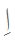
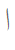
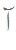
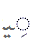
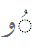
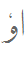

Arabic script used for Urdu
The basic alphabet covers a much wider repertoire of sounds than found in Arabic, so several extensions have been added to the basic Arabic script. Many of these come via Persian. The alphabet includes aspirated letters that have to be composed with two Unicode characters and a je letter that uses different Unicode characters depending on the context.
Although it is not always possible to guess the vowel sounds in a word, the consonants are largely reliable phonetically. There is mostly a one-to-one correspondance between letters and sounds.
Shaping and style
Since the script is cursive (ie. letters are typically joined) the letter forms can vary considerably according to position.
Urdu is typically written in a nasta'liq style; ie. the connected letters in a word tend to follow a sloping baseline. This is achieved in Unicode by using the correct font - the underlying characters used are not different for nasta'liq vs. other styles.
Consonant clusters
The absence of a vowel sound can be indicated with a diacritic called sukūn or jazm, although this diacritic is not normally shown in text, eg. سَخْت saxt hard.
It has various possible forms, including a small round circle, something that looks like peʃ, and something like a circumflex.
This diacritic is never written above the final character in a word, because as a rule a short vowel is not pronounced in this position.
Consonant lengthening
Consonant sounds can be lengthened. In vowelled text, which is very rare, this is shown using a diacritic called taʃdiːd, eg. ستّر sattar, seventy. More often than not, this is not written.
Vowels
There are 10 vowel sounds, though there are also allophonic variants. They are usually grouped into pairs of 'short' and 'long' sounds - although the difference is qualitative, rather than just length. The basic phonemes are as follows:
| ə* | ɪ | ʊ | ɛ | ɔ |
| ɑː | iː | uː | e | o |
The following table shows the standard ways of indicating vowel sounds when diacritics are used. Note however, that context can change the value of a vowel diacritic (such as a following 'ain or he) - these are detailed below the table. Three short vowels are not typically found in final position. The examples only show diacritics for the sound currently being discussed.
| sound | final | medial | initial | base component | final | medial | initial |
|---|---|---|---|---|---|---|---|
| ə |  |
zabar | بَب bəb | اَب əb | |||
| ɪ |  | zer | دِن dɪn | اِن ɪn | |||
| ʊ |  |
 |
peʃ | سُست sʊst | اُس ʊs |
||
| ɑː |  |  | alɪf | لکھنا lɪkʰnɑː |
باغ bɑːɣ |
آج ɑːʤ | |
| e |  |
 |
 |
je | بجے baʤe | بیٹا beʈɑː | ایک ek |
| iː |  |
 |  |
zer+je / je | گاری gɑːriː | تِین tiːn | اِینٹ iːnʈ |
| ɛ |  |
 |
 |
zabar+je | ہَے hɛ | کَیسا kɛsɑː | اَیسا ɛsɑː |
| o |  |
|
 |
vɑːuː | کو ko | ٹوپی ʈopiː | اوس os |
| uː |  |
|
  |
peʃ+vɑːuː or vɑːuː+inverted peʃ |
ہندُو hɪnduː ہندوٗ hɪnduː |
پُورا puːrɑː ثوٗرا puːrɑː |
اُوپر uːpar اوٗپر uːpar |
| ɔ |  |
|
 |
zabar+vɑːuː | نَو nɔ | شَوق ʃɔq | اَور ɔr |
'ain The letter ع is used in words of Arabic origin. In these words it is typically not pronounced but can support vowels. In this way, at the beginning of a word it can fulfill the same function as the alif, eg. عَرب arab Arab. The Urdu word اَرَب arab necessity, though pronounced the same, becomes a completely different word by its spelling. Note, in particular, that the equivalent of آ (alif+madd) ɑː is عا, as in عادت ɑːdat habit.
A following ع may also affect a short vowel diacritic to produce a long vowel sound as follows:
-
ɑː from zabar followed by 'ain, eg. بَعد bɑːd after
-
e from zer followed by 'ain, eg. شِعر seːr verse
-
o from peʃ followed by 'ain, eg. شُعلہ ʃolɑː flame
choṭī he and baṛī he The letters ہ and ح can also modify preceding short vowels as follows:
-
ɛ from zabar followed by he, eg. اَحمد ɛhmad Ahmed, رَہنا rɛhnɑː to remain
-
ɛ from zer followed by he, eg. مِہربانی mɛhrbɑːniː kindness, and واضِح vɑːzɛh clear
-
o from peʃ followed by 'ain, eg. شُہرت ʃohrat fame, and توجُّہ tavajːoh attention
The so-called 'silent' he that appears at the end of many words of Arabic or Persian derivation is pronounced ɑː, مکَہ makːɑː Mecca.
Nasalisation
Vowels may be nasalised, like at the end of the French word élan. This is indicated in Urdu by a glyph called nun ghunna that looks like the letter nun except that in word final position it has no dot, eg. ماں mãː, mother, ٹاںگ tãːg leg, and کروں karũː, I may do. In Unicode there are different characters for each of these uses.
Vowel junctions
A hamzā plays more than one role in Urdu. One such role is to indicate the boundaries between vowel sounds when there is no intervening consonant. Depending on the vowels concerned, it is used in a number of different ways. It can also have two different shapes, one like the initial form of 'ain and the other more like an italic 's'.
In this example we see hamza in its isolated form, انشاءﷲ ɪnʃalːaː God willing.
When the second vowel is an iː or e represented by ی or ے, the hamzā 'sits on a chair' before the letter representing the second vowel, eg. کئی kaiː several; تیئیس teiːs twenty-three; کوئی koiː someone; گئے gae they went; گائے gɑːe they sang.
The short vowel ɪ as a second vowel is also represented by hamzā 'on its chair', eg. کوئلہ koɪlɑː coal; لائن lɑːɪn queue.
To represent hamzā 'on a chair' for initial or medial positions with the Nafees Nastaleeq script you can use 0626 ARABIC LETTER YEH WITH HAMZA ABOVE.
When the second vowel is an uː or o represented by و, the hamzā typically sits directly on top of the و, eg. آؤ ɑːo come; جاؤں ʤɑːũː I may go. Note that often the hamzā is omitted in this situation. To represent this in Unicode use 0624: ARABIC LETTER WAW WITH HAMZA ABOVE.
Many words have the vowel combinations iːɑ̃ iːe iːo, where hamzā is not typically used, eg. لڑکیاں laɽkiːɑ̃ː girls; چلیے ʧaliːe come on; لڑکیوں کا laɽkiːõ kɑː of the girls.
Hamzā is also used to represent izāfat when the preceding word ends in either choṭī he or ye (see below).
Izāfat
Izāfat ɪzɑːfat is the name given to the short vowel ɛ used to describe a relationship between two words. It may be translated of, eg. as in the Lion of Punjab.
This sound is mostly represented using zer. Sometimes, however, the combining mark is not shown, even though pronounced. Examples: شیرِ پنجاب ʃer ɛ panʤɑːb Lion of the Panjab; طالبِ علم tɑːlɪb ɛ ɪlm seeker of knowledge (a student).
Izāfat is represented by a combining hamzā when the preceding word ends in either choṭī he ہ or ye ی: eg. قطرۂآب qatrah ɛ ɑːb drop of water; ولئکامل valiː ɛ kɑːmɪl perfect saint.
izāfat may also be shown as ے with or without a combining hamzā when the preceding word ends in a long vowel: eg. صدا ۓ بلند sadɑː ɛ buland a high voice; رو ۓ زمین ruː ɛ zamiːn the surface of the ground.
Arabic definite article
The pronunciation of ال (alif followed by lām) varies when it represents the Arabic definite article . This affects many words in Urdu that have come from Arabic, in particular names and adverbial expressions.
The lām is not pronounced if it precedes one of the following characters: ت062A te, ث062B se, د062F dāl, ذ0630 zāl, ر0631 re, ز0632 ze, س0633 sīn, ش0634 šīn, ص0635 svād, ض0636 zvād, ط0637 toe, ظ0638 zoe, ل0644 lām, ن0646 nūn. Instead, the following sound is doubled. A tašdīd may sometimes be used to indicate this. Example: السلام علیکم asːalɑːm alaikum greetings.
Often the alif is not pronounced after a short preceding word that ends in a vowel. If the preceding vowel was long, it is shortened in this process. Examples: بالکل bɪlkul absolutely; فی الحال filhɑːl at present.
Often the vowel is pronounced ʊ, eg. دارالحکومت dɑːrʊlhʊkuːmat capital.